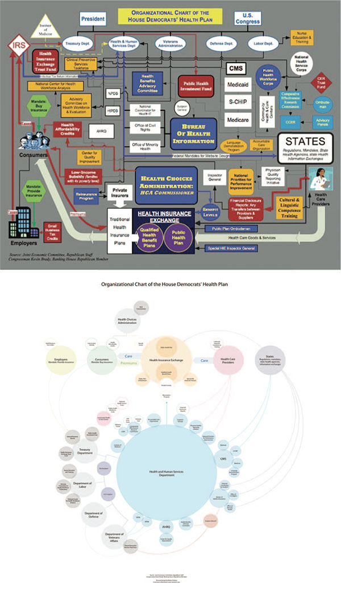

Visualizations are tools used to communicate a story, are largely the output of a designer’s decision process—a series of choices to either add or omit information.
The study looks at how visualizations communicate; how the designer (intentionally or unintentionally) exerts control over the data and visualization; and how those decisions influence an end-user’s interpretation of the visualization.
The study highlights several areas to consider when designing and interpretation visualizations. Below are some key areas and a few examples:
Source: Visualization Rhetoric: Framing Effects in Narrative Visualization, Jessica Hullman and Nicholas Diakopoulos. December 2011.

Chart released on Speaker of the House John Boehnerʼs website (top); chart in response to same sourceʼs ʻOrganizational Chart of the Democratʼs Health Planʼ by graphic designer Robert Palmer (bottom).